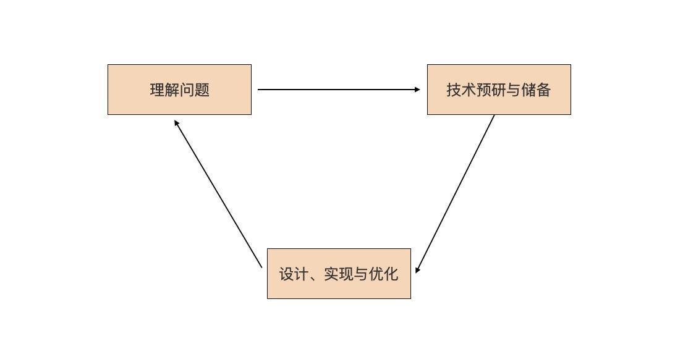
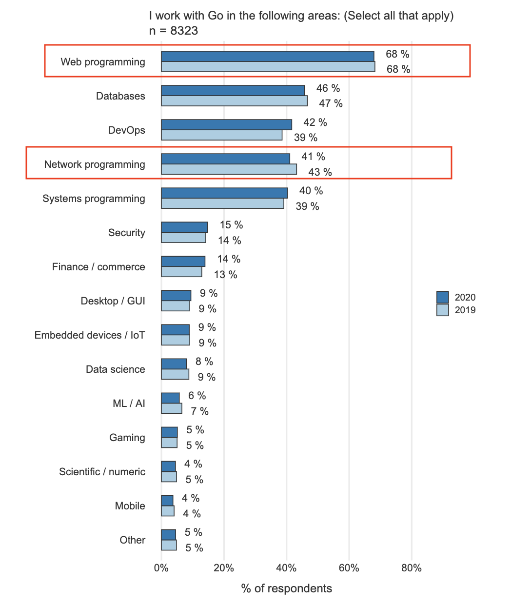
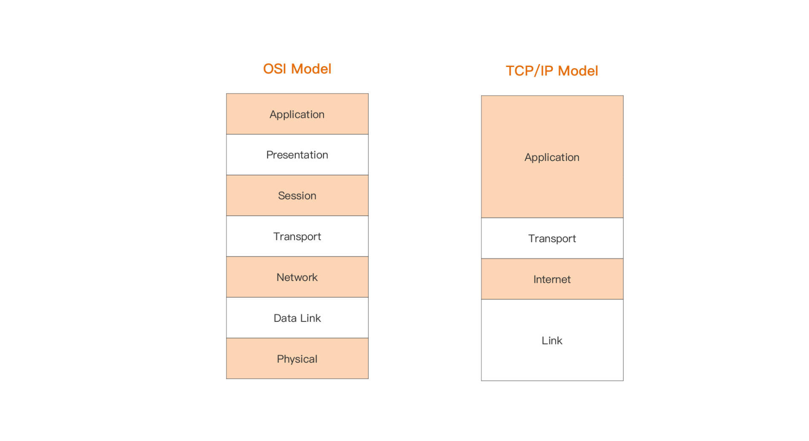
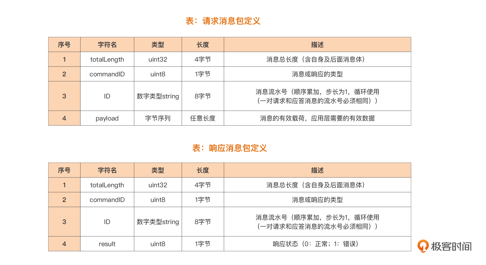
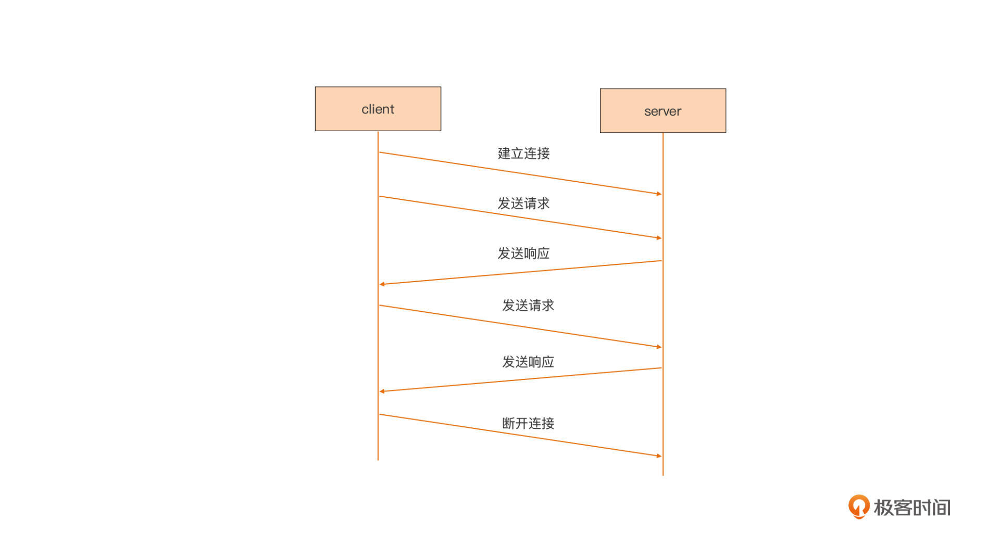
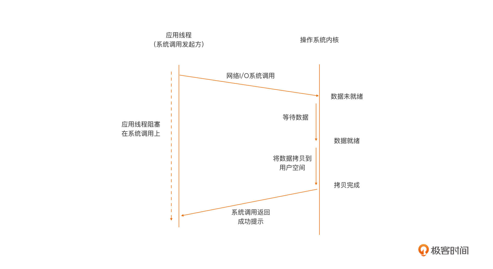
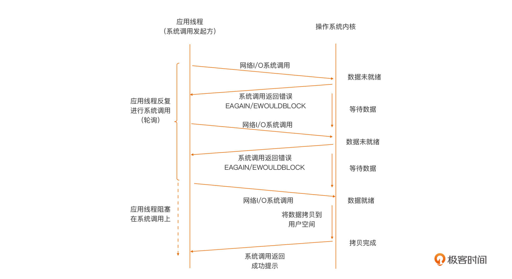
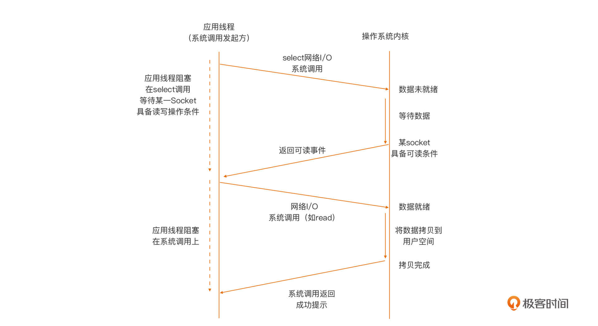
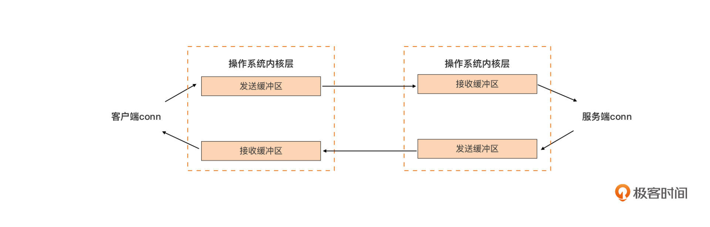

- 00 开篇词 这样入门Go，才能少走弯路.md.html
- 01 前世今生：你不得不了解的Go的历史和现状.md.html
- 02 拒绝“Hello and Bye”：Go语言的设计哲学是怎么一回事？.md.html
- 03 配好环境：选择一种最适合你的Go安装方法.md.html
- 04 初窥门径：一个Go程序的结构是怎样的？.md.html
- 05 标准先行：Go项目的布局标准是什么？.md.html
- 06 构建模式：Go是怎么解决包依赖管理问题的？.md.html
- 07 构建模式：Go Module的6类常规操作.md.html
- 08 入口函数与包初始化：搞清Go程序的执行次序.md.html
- 09 即学即练：构建一个Web服务就是这么简单.md.html
- 10 变量声明：静态语言有别于动态语言的重要特征.md.html
- 11 代码块与作用域：如何保证变量不会被遮蔽？.md.html
- 12 基本数据类型：Go原生支持的数值类型有哪些？.md.html
- 13 基本数据类型：为什么Go要原生支持字符串类型？.md.html
- 14 常量：Go在“常量”设计上的创新有哪些？.md.html
- 15 同构复合类型：从定长数组到变长切片.md.html
- 16 复合数据类型：原生map类型的实现机制是怎样的？.md.html
- 17 复合数据类型：用结构体建立对真实世界的抽象.md.html
- 18 控制结构：if的“快乐路径”原则.md.html
- 19 控制结构：Go的for循环，仅此一种.md.html
- 20 控制结构：Go中的switch语句有哪些变化？.md.html
- 21 函数：请叫我“一等公民”.md.html
- 22 函数：怎么结合多返回值进行错误处理？.md.html
- 23 函数：怎么让函数更简洁健壮？.md.html
- 24 方法：理解“方法”的本质.md.html
- 25 方法：方法集合与如何选择receiver类型？.md.html
- 26 方法：如何用类型嵌入模拟实现“继承”？.md.html
- 27 即学即练：跟踪函数调用链，理解代码更直观.md.html
- 28 接口：接口即契约.md.html
- 29 接口：为什么nil接口不等于nil？.md.html
- 30 接口：Go中最强大的魔法.md.html
- 31 并发：Go的并发方案实现方案是怎样的？.md.html
- 32 并发：聊聊Goroutine调度器的原理.md.html
- 33 并发：小channel中蕴含大智慧.md.html
- 34 并发：如何使用共享变量？.md.html
- 35 即学即练：如何实现一个轻量级线程池？.md.html
- 36 打稳根基：怎么实现一个TCP服务器？（上）.md.html
- 37 代码操练：怎么实现一个TCP服务器？（中）.md.html
- 38 成果优化：怎么实现一个TCP服务器？（下）.md.html
- 39 驯服泛型：了解类型参数.md.html
- 40 驯服泛型：定义泛型约束.md.html
- 41 驯服泛型：明确使用时机.md.html
- 元旦快乐 这是一份暂时停更的声明.md.html
- 加餐 作为Go Module的作者，你应该知道的几件事.md.html
- 加餐 如何拉取私有的Go Module？.md.html
- 加餐 我“私藏”的那些优质且权威的Go语言学习资料.md.html
- 加餐 聊聊Go 1.17版本的那些新特性.md.html
- 加餐 聊聊Go语言的指针.md.html
- 加餐 聊聊最近大热的Go泛型.md.html
- 大咖助阵 叶剑峰：Go语言中常用的那些代码优化点.md.html
- 大咖助阵 大明：Go泛型，泛了，但没有完全泛.md.html
- 大咖助阵 孔令飞：从小白到“老鸟”，我的Go语言进阶之路.md.html
- 大咖助阵 徐祥曦：从销售到分布式存储工程师，我与 Go 的故事.md.html
- 大咖助阵 曹春晖：聊聊 Go 语言的 GC 实现.md.html
- 大咖助阵 海纳：聊聊语言中的类型系统与泛型.md.html
- 期中测试 一起检验下你的学习成果吧.md.html
- 用户故事 罗杰：我的Go语言学习之路.md.html
- 结束语 和你一起迎接Go的黄金十年.md.html
- 结课测试 快来检验下你的学习成果吧！.md.html
- 捐赠
36 打稳根基：怎么实现一个TCP服务器？（上）
你好，我是Tony Bai。欢迎来到这门课的最后一个部分：实战篇。
在进入正文之前，我先来说点题外话。去年我读过一本名为《陪孩子走过初中三年》的书，书中作者女儿的初中班主任有一句“名言”：“跟上了！”作者对这句名言的解读是：学习上，她强调孩子们学习的时候不要掉队，意思是一要跟上老师的步子，上课认真听讲，课后老师留的作业要不打折扣地去完成；二也要跟上年级和班级的进度。只要能紧紧地跟上，学习就不会有太大的问题。
在前面课程的留言区，我也经常用“跟上了”作为学习这门课的建议，和我一起同步走到这里的同学，都是践行“跟上了”这句“名言”的典范，从开篇词到现在，你是不是已经感受到了自己在Go语言方面的进步了呢？
好了，我们言归正传。关于最后一篇写啥，我也想了许久。开篇词中提过，实战篇的职责是带着你走完Go语言学习的“最后一公里”，那究竟什么是“最后一公里呢？该如何理解这最后一公里呢？
我的理解是，在掌握了前面的Go语言语法的前提下，这“最后一公里”就是面对一个实际问题的解决思路。很多语言初学者都有这样一个问题，即便学完了语法，面对一个实际问题时，还是也不知道该从何处着手。
其实这个事并没有那么难，尤其是程序员这一行，遇到一个实际问题，我们通常使用这个思路：

我们简单解释一下这张图。
首先是要理解问题。解决实际问题的过程起始于对问题的理解。我们要搞清楚为什么会有这个问题，问题究竟是什么。对于技术人员来说，最终目的是识别出可能要用到的技术点。
然后我们要对识别出的技术点，做相应的技术预研与储备。怎么做技术预研呢？我们至少要了解技术诞生的背景、技术的原理、技术能解决哪些问题以及不能解决哪些问题，还有技术的优点与不足，等等。当然，如果没有新技术点，可以忽略这一步。
最后，我们要基于技术预研和储备的结果，进行解决方案的设计与实现，这个是技术人最擅长的。
那为什么这个解决实际问题的步骤是一个循环呢？这是由问题的难易程度，以及人的认知能力有差别所决定的。如果问题简单或人的认知能力很强，我们可以一次性解决这个实际问题；如果问题复杂或人的认知能力稍弱，那么一个循环可能无法彻底解决这个问题，我们就会再一次进入该循环，直到问题得到完美解决。
你也看到了，这事儿说起来有些枯燥，那我们就来实践一下。在实战篇的这三讲中，我们就来“走一遍”这个过程。
那我们选一个什么例子呢？我们还是从Go官方用户2020调查报告中寻找答案，看看“我用Go在哪些领域开展工作”的调查结果：

我们看到，“Web编程”和“网络编程”分别位列第一名和第四名，我们在09讲的小实战项目中曾接触过简单的Web编程，因此这里，我们选择一个不同于Web编程的网络编程的例子，做为实战篇的实战项目。在实战篇的三讲中，我们就参照这个实际问题解决过程循环，逐步来解决一个网络编程类的实际问题。
什么是网络编程
什么是网络编程呢？网络编程的范围很大，因为我们熟知的网络是分层的，OSI规定了七层参考模型，而实际上我们使用的主流网络模型实现，是TCP/IP模型，它只有四层：

通常来说，我们更多关注OSI网络模型中的传输层（四层）与应用层（七层），也就是TCP/IP网络模型中的最上面两层。
TCP/IP网络模型，实现了两种传输层协议：TCP和UDP。TCP是面向连接的流协议，为通信的两端提供稳定可靠的数据传输服务；而UDP则提供了一种无需建立连接就可以发送数据包的方法。两种协议各有擅长的应用场景。
我们日常开发中使用最多的是TCP协议。基于TCP协议，我们实现了各种各样的满足用户需求的应用层协议。比如，我们常用的HTTP协议就是应用层协议的一种，而且是使用得最广泛的一种。而基于HTTP的Web编程就是一种针对应用层的网络编程。我们还可以基于传输层暴露给开发者的编程接口，实现应用层的自定义应用协议。
这个传输层暴露给开发者的编程接口，究竟是什么呢？目前各大主流操作系统平台中，最常用的传输层暴露给用户的网络编程接口，就是套接字（socket）。直接基于socket编程实现应用层通信业务，也是最常见的一种网络编程形式。
所以，这一节课，我们就使用一个基于socket网络编程的例子，我们先来看看这个例子对应的实际问题是什么。
问题描述
我们面临的实际问题是这样的：实现一个基于TCP的自定义应用层协议的通信服务端。仅仅这一句话，你可能还不是很清楚，我们展开说明一下。
我们的输入，是一个基于传输层自定义的应用层协议规范。由于TCP是面向连接的流协议传输机制，数据流本身没有明显的边界，这样定义协议时，就需要自行定义确定边界的方法，因此，基于TCP的自定义应用层协议通常有两种常见的定义模式：
二进制模式：采用长度字段标识独立数据包的边界。采用这种方式定义的常见协议包括MQTT（物联网最常用的应用层协议之一）、SMPP（短信网关点对点接口协议）等；
文本模式：采用特定分隔符标识流中的数据包的边界，常见的包括HTTP协议等。
相比之下，二进制模式要比文本模式编码更紧凑也更高效，所以我们这个问题中的自定义协议也采用了二进制模式，协议规范内容如下图：

关于协议内容的分析，我们放到设计与实现的那一讲中再细说，这里我们再看一下使用这个协议的通信两端的通信流程：

我们看到，这是一个典型的“请求/响应”通信模型。连接由客户端发起，建立连接后，客户端发起请求，服务端收到请求后处理并返回响应，就这样一个请求一个响应的进行下去，直到客户端主动断开连接为止。
而我们的任务，就是实现支持这个协议通信的服务端。
我们先假设各位小伙伴都没有亲自开发过类似的通信服务器，所以当理解完这个问题后，我们需要识别出解决这一问题可能使用到的技术点。不过这个问题并不复杂，我们可以很容易地识别出其中的技术点。
首先，前面说过socket是传输层给用户提供的编程接口，我们要进行的网络通信绕不开socket，因此我们首先需要了解socket编程模型。
其次，一旦通过socket将双方的连接建立后，剩下的就是通过网络I/O操作在两端收发数据了，学习基本网络I/O操作的方法与注意事项也必不可少。
最后，任何一端准备发送数据或收到数据后都要对数据进行操作，由于TCP是流协议，我们需要了解针对字节的操作。
按照问题解决循环，一旦识别出技术点，接下来我们要做的就是技术预研与储备。在Go中，字节操作基本上就是byte切片的操作，这些用法我们在第15讲中已经学过了。所以，这一讲，我们就来学习一下socket编程模型以及网络I/O操作，为后两讲的设计与实现打稳根基，做好铺垫。
TCP Socket编程模型
TCP Socket诞生以来，它的编程模型，也就是网络I/O模型已几经演化。网络I/O模型定义的是应用线程与操作系统内核之间的交互行为模式。我们通常用阻塞（Blocking）/非阻塞（Non-Blocking）来描述网络I/O模型。
阻塞/非阻塞，是以内核是否等数据全部就绪后，才返回（给发起系统调用的应用线程）来区分的。如果内核一直等到全部数据就绪才返回，这种行为模式就称为阻塞。如果内核查看数据就绪状态后，即便没有就绪也立即返回错误（给发起系统调用的应用线程），那么这种行为模式则称为非阻塞。
常用的网络I/O模型包括下面这几种：
- 阻塞I/O(Blocking I/O)
阻塞I/O是最常用的模型，这个模型下应用线程与内核之间的交互行为模式是这样的：

我们看到，在阻塞I/O模型下，当用户空间应用线程，向操作系统内核发起I/O请求后（一般为操作系统提供的I/O系列系统调用），内核会尝试执行这个I/O操作，并等所有数据就绪后，将数据从内核空间拷贝到用户空间，最后系统调用从内核空间返回。而在这个期间内，用户空间应用线程将阻塞在这个I/O系统调用上，无法进行后续处理，只能等待。
因此，在这样的模型下，一个线程仅能处理一个网络连接上的数据通信。即便连接上没有数据，线程也只能阻塞在对Socket的读操作上（以等待对端的数据）。虽然这个模型对应用整体来说是低效的，但对开发人员来说，这个模型却是最容易实现和使用的，所以，各大平台在默认情况下都将Socket设置为阻塞的。
- 非阻塞I/O（Non-Blocking I/O）
非阻塞I/O模型下，应用线程与内核之间的交互行为模式是这样的：

和阻塞I/O模型正相反，在非阻塞模型下，当用户空间线程向操作系统内核发起I/O请求后，内核会执行这个I/O操作，如果这个时候数据尚未就绪，就会立即将“未就绪”的状态以错误码形式（比如：EAGAIN/EWOULDBLOCK），返回给这次I/O系统调用的发起者。而后者就会根据系统调用的返回状态来决定下一步该怎么做。
在非阻塞模型下，位于用户空间的I/O请求发起者通常会通过轮询的方式，去一次次发起I/O请求，直到读到所需的数据为止。不过，这样的轮询是对CPU计算资源的极大浪费，因此，非阻塞I/O模型单独应用于实际生产的比例并不高。
- I/O多路复用（I/O Multiplexing）
为了避免非阻塞I/O模型轮询对计算资源的浪费，同时也考虑到阻塞I/O模型的低效，开发人员首选的网络I/O模型，逐渐变成了建立在内核提供的多路复用函数select/poll等（以及性能更好的epoll等函数）基础上的I/O多路复用模型。
这个模型下，应用线程与内核之间的交互行为模式如下图：

从图中我们看到，在这种模型下，应用线程首先将需要进行I/O操作的Socket，都添加到多路复用函数中（这里以select为例），然后阻塞，等待select系统调用返回。当内核发现有数据到达时，对应的Socket具备了通信条件，这时select函数返回。然后用户线程会针对这个Socket再次发起网络I/O请求，比如一个read操作。由于数据已就绪，这次网络I/O操作将得到预期的操作结果。
我们看到，相比于阻塞模型一个线程只能处理一个Socket的低效，I/O多路复用模型中，一个应用线程可以同时处理多个Socket。同时，I/O多路复用模型由内核实现可读/可写事件的通知，避免了非阻塞模型中轮询，带来的CPU计算资源浪费的问题。
目前，主流网络服务器采用的都是“I/O多路复用”模型，有的也结合了多线程。不过，I/O多路复用模型在支持更多连接、提升I/O操作效率的同时，也给使用者带来了不小的复杂度，以至于后面出现了许多高性能的I/O多路复用框架，比如：libevent、libev、libuv等，以帮助开发者简化开发复杂性，降低心智负担。
那么，在这三种socket编程模型中，Go语言使用的是哪一种呢？我们继续往下看。
Go语言socket编程模型
Go语言设计者考虑得更多的是Gopher的开发体验。前面我们也说过，阻塞I/O模型是对开发人员最友好的，也是心智负担最低的模型，而I/O多路复用的这种通过回调割裂执行流的模型，对开发人员来说还是过于复杂了，于是Go选择了为开发人员提供阻塞I/O模型，Gopher只需在Goroutine中以最简单、最易用的“阻塞I/O模型”的方式，进行Socket操作就可以了。
再加上，Go没有使用基于线程的并发模型，而是使用了开销更小的Goroutine作为基本执行单元，这让每个Goroutine处理一个TCP连接成为可能，并且在高并发下依旧表现出色。
不过，网络I/O操作都是系统调用，Goroutine执行I/O操作的话，一旦阻塞在系统调用上，就会导致M也被阻塞，为了解决这个问题，Go设计者将这个“复杂性”隐藏在Go运行时中，他们在运行时中实现了网络轮询器（netpoller)，netpoller的作用，就是只阻塞执行网络I/O操作的Goroutine，但不阻塞执行Goroutine的线程（也就是M）。
这样一来，对于Go程序的用户层（相对于Go运行时层）来说，它眼中看到的goroutine采用了“阻塞I/O模型”进行网络I/O操作，Socket都是“阻塞”的。
但实际上，这样的“假象”，是通过Go运行时中的netpoller I/O多路复用机制，“模拟”出来的，对应的、真实的底层操作系统Socket，实际上是非阻塞的。只是运行时拦截了针对底层Socket的系统调用返回的错误码，并通过netpoller和Goroutine调度，让Goroutine“阻塞”在用户层所看到的Socket描述符上。
比如：当用户层针对某个Socket描述符发起read操作时，如果这个Socket对应的连接上还没有数据，运行时就会将这个Socket描述符加入到netpoller中监听，同时发起此次读操作的Goroutine会被挂起。
直到Go运行时收到这个Socket数据可读的通知，Go运行时才会重新唤醒等待在这个Socket上准备读数据的那个Goroutine。而这个过程，从Goroutine的视角来看，就像是read操作一直阻塞在那个Socket描述符上一样。
而且，Go语言在网络轮询器（netpoller）中采用了I/O多路复用的模型。考虑到最常见的多路复用系统调用select有比较多的限制，比如：监听Socket的数量有上限（1024）、时间复杂度高，等等，Go运行时选择了在不同操作系统上，使用操作系统各自实现的高性能多路复用函数，比如：Linux上的epoll、Windows上的iocp、FreeBSD/MacOS上的kqueue、Solaris上的event port等，这样可以最大程度提高netpoller的调度和执行性能。
了解完Go socket编程模型后，接下来，我们就深入到几个常用的基于socket的网络I/O操作中，逐一了解一下这些操作的机制与注意事项。
socket监听（listen）与接收连接（accept）
socket编程的核心在于服务端，而服务端有着自己一套相对固定的套路：Listen+Accept。在这套固定套路的基础上，我们的服务端程序通常采用一个Goroutine处理一个连接，它的大致结构如下：
func handleConn(c net.Conn) {
defer c.Close()
for {
// read from the connection
// ... ...
// write to the connection
//... ...
}
}
func main() {
l, err := net.Listen("tcp", ":8888")
if err != nil {
fmt.Println("listen error:", err)
return
}
for {
c, err := l.Accept()
if err != nil {
fmt.Println("accept error:", err)
break
}
// start a new goroutine to handle
// the new connection.
go handleConn(c)
}
}
在这个服务端程序中，我们在第12行使用了net包的Listen函数绑定（bind）服务器端口8888，并将它转换为监听状态，Listen返回成功后，这个服务会进入一个循环，并调用net.Listener的Accept方法接收新客户端连接。
在没有新连接的时候，这个服务会阻塞在Accept调用上，直到有客户端连接上来，Accept方法将返回一个net.Conn实例。通过这个net.Conn，我们可以和新连上的客户端进行通信。这个服务程序启动了一个新Goroutine，并将net.Conn传给这个Goroutine，这样这个Goroutine就专职负责处理与这个客户端的通信了。
而net.Listen函数很少报错，除非是监听的端口已经被占用，那样程序将输出类似这样的错误：
bind: address already in use
当服务程序启动成功后，我们可以通过netstat命令，查看端口的监听情况：
$netstat -an|grep 8888
tcp46 0 0 *.8888 *.* LISTEN
了解了服务端的“套路”后，我们再来看看客户端。
向服务端建立TCP连接
一旦服务端按照上面的Listen + Accept结构成功启动，客户端便可以使用net.Dial或net.DialTimeout向服务端发起连接建立的请求：
conn, err := net.Dial("tcp", "localhost:8888")
conn, err := net.DialTimeout("tcp", "localhost:8888", 2 * time.Second)
Dial函数向服务端发起TCP连接，这个函数会一直阻塞，直到连接成功或失败后，才会返回。而DialTimeout带有超时机制，如果连接耗时大于超时时间，这个函数会返回超时错误。 对于客户端来说，连接的建立还可能会遇到几种特殊情形。
第一种情况：网络不可达或对方服务未启动。
如果传给Dial的服务端地址是网络不可达的，或者服务地址中端口对应的服务并没有启动，端口未被监听（Listen），Dial几乎会立即返回类似这样的错误：
dial error: dial tcp :8888: getsockopt: connection refused
第二种情况：对方服务的listen backlog队列满。
当对方服务器很忙，瞬间有大量客户端尝试向服务端建立连接时，服务端可能会出现listen backlog队列满，接收连接（accept）不及时的情况，这就会导致客户端的Dial调用阻塞，直到服务端进行一次accept，从backlog队列中腾出一个槽位，客户端的Dial才会返回成功。
而且，不同操作系统下backlog队列的长度是不同的，在macOS下，这个默认值如下：
$sysctl -a|grep kern.ipc.somaxconn
kern.ipc.somaxconn: 128
在Ubuntu Linux下，backlog队列的长度值与系统中net.ipv4.tcp_max_syn_backlog的设置有关。
那么，极端情况下，如果服务端一直不执行accept操作，那么客户端会一直阻塞吗？
答案是不会！我们看一个实测结果。如果服务端运行在macOS下，那么客户端会阻塞大约1分多钟，才会返回超时错误：
dial error: dial tcp :8888: getsockopt: operation timed out
而如果服务端运行在Ubuntu上，客户端的Dial调用大约在2分多钟后提示超时错误，这个结果也和Linux的系统设置有关。
第三种情况：若网络延迟较大，Dial将阻塞并超时。
如果网络延迟较大，TCP连接的建立过程（三次握手）将更加艰难坎坷，会经历各种丢包，时间消耗自然也会更长，这种情况下，Dial函数会阻塞。如果经过长时间阻塞后依旧无法建立连接，那么Dial也会返回类似getsockopt: operation timed out的错误。
在连接建立阶段，多数情况下Dial是可以满足需求的，即便是阻塞一小会儿也没事。但对于那些需要有严格的连接时间限定的Go应用，如果一定时间内没能成功建立连接，程序可能会需要执行一段“错误”处理逻辑，所以，这种情况下，我们使用DialTimeout函数更适合。
全双工通信
一旦客户端调用Dial成功，我们就在客户端与服务端之间建立起了一条全双工的通信通道。通信双方通过各自获得的Socket，可以在向对方发送数据包的同时，接收来自对方的数据包。下图展示了系统层面对这条全双工通信通道的实现原理：

任何一方的操作系统，都会为已建立的连接分配一个发送缓冲区和一个接收缓冲区。
以客户端为例，客户端会通过成功连接服务端后得到的conn（封装了底层的socket）向服务端发送数据包。这些数据包会先进入到己方的发送缓冲区中，之后，这些数据会被操作系统内核通过网络设备和链路，发到服务端的接收缓冲区中，服务端程序再通过代表客户端连接的conn读取服务端接收缓冲区中的数据，并处理。
反之，服务端发向客户端的数据包也是先后经过服务端的发送缓冲区、客户端的接收缓冲区，最终到达客户端的应用的。
理解了这个通信原理，我们再理解下面的Socket操作就容易许多了。
Socket读操作
连接建立起来后，我们就要在连接上进行读写以完成业务逻辑。我们前面说过，Go运行时隐藏了I/O多路复用的复杂性。Go语言使用者只需采用Goroutine+阻塞I/O模型，就可以满足大部分场景需求。Dial连接成功后，会返回一个net.Conn接口类型的变量值，这个接口变量的底层类型为一个*TCPConn：
//$GOROOT/src/net/tcpsock.go
type TCPConn struct {
conn
}
TCPConn内嵌了一个非导出类型：conn（封装了底层的socket），因此，TCPConn“继承”了conn类型的Read和Write方法，后续通过Dial函数返回值调用的Read和Write方法都是net.conn的方法，它们分别代表了对socket的读和写。
接下来，我们先来通过几个场景来总结一下Go中从socket读取数据的行为特点。
首先是Socket中无数据的场景。
连接建立后，如果客户端未发送数据，服务端会阻塞在Socket的读操作上，这和前面提到的“阻塞I/O模型”的行为模式是一致的。执行该这个操作的Goroutine也会被挂起。Go运行时会监视这个Socket，直到它有数据读事件，才会重新调度这个Socket对应的Goroutine完成读操作。
第二种情况是Socket中有部分数据。
如果Socket中有部分数据就绪，且数据数量小于一次读操作期望读出的数据长度，那么读操作将会成功读出这部分数据，并返回，而不是等待期望长度数据全部读取后，再返回。
举个例子，服务端创建一个长度为10的切片作为接收数据的缓冲区，等待Read操作将读取的数据放入切片。当客户端在已经建立成功的连接上，成功写入两个字节的数据（比如：hi）后，服务端的Read方法将成功读取数据，并返回n=2，err=nil，而不是等收满10个字节后才返回。
第三种情况是Socket中有足够数据。
如果连接上有数据，且数据长度大于等于一次Read操作期望读出的数据长度，那么Read将会成功读出这部分数据，并返回。这个情景是最符合我们对Read的期待的了。
我们以上面的例子为例，当客户端在已经建立成功的连接上，成功写入15个字节的数据后，服务端进行第一次Read时，会用连接上的数据将我们传入的切片缓冲区（长度为10）填满后返回：n = 10, err = nil。这个时候，内核缓冲区中还剩5个字节数据，当服务端再次调用Read方法时，就会把剩余数据全部读出。
最后一种情况是设置读操作超时。
有些场合，对socket的读操作的阻塞时间有严格限制的，但由于Go使用的是阻塞I/O模型，如果没有可读数据，Read操作会一直阻塞在对Socket的读操作上。
这时，我们可以通过net.Conn提供的SetReadDeadline方法，设置读操作的超时时间，当超时后仍然没有数据可读的情况下，Read操作会解除阻塞并返回超时错误，这就给Read方法的调用者提供了进行其他业务处理逻辑的机会。
SetReadDeadline方法接受一个绝对时间作为超时的deadline。一旦通过这个方法设置了某个socket的Read deadline，当发生超时后，如果我们不重新设置Deadline，那么后面与这个socket有关的所有读操作，都会返回超时失败错误。
下面是结合SetReadDeadline设置的服务端一般处理逻辑：
func handleConn(c net.Conn) {
defer c.Close()
for {
// read from the connection
var buf = make([]byte, 128)
c.SetReadDeadline(time.Now().Add(time.Second))
n, err := c.Read(buf)
if err != nil {
log.Printf("conn read %d bytes, error: %s", n, err)
if nerr, ok := err.(net.Error); ok && nerr.Timeout() {
// 进行其他业务逻辑的处理
continue
}
return
}
log.Printf("read %d bytes, content is %s\n", n, string(buf[:n]))
}
}
如果我们要取消超时设置，可以使用SetReadDeadline（time.Time{}）实现。
Socket写操作
通过net.Conn实例的Write方法，我们可以将数据写入Socket。当Write调用的返回值n的值，与预期要写入的数据长度相等，且err = nil时，我们就执行了一次成功的Socket写操作，这是我们在调用Write时遇到的最常见的情形。
和Socket的读操作一些特殊情形相比，Socket写操作遇到的特殊情形同样不少，我们也逐一看一下。
第一种情况：写阻塞。
TCP协议通信两方的操作系统内核，都会为这个连接保留数据缓冲区，调用Write向Socket写入数据，实际上是将数据写入到操作系统协议栈的数据缓冲区中。TCP是全双工通信，因此每个方向都有独立的数据缓冲。当发送方将对方的接收缓冲区，以及自身的发送缓冲区都写满后，再调用Write方法就会出现阻塞的情况。
我们来看一个具体例子。这个例子的客户端代码如下：
func main() {
log.Println("begin dial...")
conn, err := net.Dial("tcp", ":8888")
if err != nil {
log.Println("dial error:", err)
return
}
defer conn.Close()
log.Println("dial ok")
data := make([]byte, 65536)
var total int
for {
n, err := conn.Write(data)
if err != nil {
total += n
log.Printf("write %d bytes, error:%s\n", n, err)
break
}
total += n
log.Printf("write %d bytes this time, %d bytes in total\n", n, total)
}
log.Printf("write %d bytes in total\n", total)
}
客户端每次调用Write方法向服务端写入65536个字节，并在Write方法返回后，输出此次Write的写入字节数和程序启动后写入的总字节数量。
服务端的处理程序逻辑，我也摘录了主要部分，你可以看一下：
... ...
func handleConn(c net.Conn) {
defer c.Close()
time.Sleep(time.Second * 10)
for {
// read from the connection
time.Sleep(5 * time.Second)
var buf = make([]byte, 60000)
log.Println("start to read from conn")
n, err := c.Read(buf)
if err != nil {
log.Printf("conn read %d bytes, error: %s", n, err)
if nerr, ok := err.(net.Error); ok && nerr.Timeout() {
continue
}
}
log.Printf("read %d bytes, content is %s\n", n, string(buf[:n]))
}
}
... ...
我们可以看到，服务端在前10秒中并不读取数据，因此当客户端一直调用Write方法写入数据时，写到一定量后就会发生阻塞。你可以看一下客户端的执行输出：
2022/01/14 14:57:33 begin dial...
2022/01/14 14:57:33 dial ok
2022/01/14 14:57:33 write 65536 bytes this time, 65536 bytes in total
... ...
2022/01/14 14:57:33 write 65536 bytes this time, 589824 bytes in total
2022/01/14 14:57:33 write 65536 bytes this time, 655360 bytes in total <-- 之后，写操作将阻塞
后续当服务端每隔5秒进行一次读操作后，内核socket缓冲区腾出了空间，客户端就又可以写入了：
服务端：
2022/01/14 15:07:01 accept a new connection
2022/01/14 15:07:16 start to read from conn
2022/01/14 15:07:16 read 60000 bytes, content is
2022/01/14 15:07:21 start to read from conn
2022/01/14 15:07:21 read 60000 bytes, content is
2022/01/14 15:07:26 start to read from conn
2022/01/14 15:07:26 read 60000 bytes, content is
....
客户端(得以继续写入)：
2022/01/14 15:07:01 write 65536 bytes this time, 720896 bytes in total
2022/01/14 15:07:06 write 65536 bytes this time, 786432 bytes in total
2022/01/14 15:07:16 write 65536 bytes this time, 851968 bytes in total
2022/01/14 15:07:16 write 65536 bytes this time, 917504 bytes in total
2022/01/14 15:07:27 write 65536 bytes this time, 983040 bytes in total
2022/01/14 15:07:27 write 65536 bytes this time, 1048576 bytes in total
.... ...
第二种情况：写入部分数据。
Write操作存在写入部分数据的情况，比如上面例子中，当客户端输出日志停留在“write 65536 bytes this time, 655360 bytes in total”时，我们杀掉服务端，这时我们就会看到客户端输出以下日志：
...
2022/01/14 15:19:14 write 65536 bytes this time, 655360 bytes in total
2022/01/14 15:19:16 write 24108 bytes, error:write tcp 127.0.0.1:62245->127.0.0.1:8888: write: broken pipe
2022/01/14 15:19:16 write 679468 bytes in total
显然，Write并不是在655360这个地方阻塞的，而是后续又写入24108个字节后发生了阻塞，服务端Socket关闭后，我们看到客户端又写入24108字节后，才返回的broken pipe错误。由于这24108字节数据并未真正被服务端接收到，程序需要考虑妥善处理这些数据，以防数据丢失。
第三种情况：写入超时。
如果我们非要给Write操作增加一个期限，可以调用SetWriteDeadline方法。比如，我们可以将上面例子中的客户端源码拷贝一份，然后在新客户端源码中的Write调用之前，增加一行超时时间设置代码：
conn.SetWriteDeadline(time.Now().Add(time.Microsecond * 10))
然后先后启动服务端与新客户端，我们可以看到写入超时的情况下，Write方法的返回结果：
客户端输出：
2022/01/14 15:26:34 begin dial...
2022/01/14 15:26:34 dial ok
2022/01/14 15:26:34 write 65536 bytes this time, 65536 bytes in total
... ...
2022/01/14 15:26:34 write 65536 bytes this time, 655360 bytes in total
2022/01/14 15:26:34 write 24108 bytes, error:write tcp 127.0.0.1:62325->127.0.0.1:8888: i/o timeout
2022/01/14 15:26:34 write 679468 bytes in total
我们可以看到，在Write方法写入超时时，依旧存在数据部分写入（仅写入24108个字节）的情况。另外，和SetReadDeadline一样，只要我们通过SetWriteDeadline设置了写超时，那无论后续Write方法是否成功，如果不重新设置写超时或取消写超时，后续对Socket的写操作都将以超时失败告终。
综合上面这些例子，虽然Go给我们提供了阻塞I/O的便利，但在调用Read和Write时，依旧要综合函数返回的n和err的结果以做出正确处理。
不过，前面说的Socket读与写都是限于单Goroutine下的操作，如果多个Goroutine并发读或写一个socket会发生什么呢？我们继续往下看。
并发Socket读写
Goroutine的网络编程模型，决定了存在着不同Goroutine间共享conn的情况，那么conn的读写是否是Goroutine并发安全的呢？不过，在深入这个问题之前，我们先从应用的角度上，看看并发read操作和write操作的Goroutine安全的必要性。
对于Read操作而言，由于TCP是面向字节流，conn.Read无法正确区分数据的业务边界，因此，多个Goroutine对同一个conn进行read的意义不大，Goroutine读到不完整的业务包，反倒增加了业务处理的难度。
但对于Write操作而言，倒是有多个Goroutine并发写的情况。不过conn读写是否是Goroutine安全的测试并不是很好做，我们先深入一下运行时代码，从理论上给这个问题定个性。
首先，net.conn只是*netFD 的外层包裹结构，最终Write和Read都会落在其中的fd字段上：
//$GOROOT/src/net/net.go
type conn struct {
fd *netFD
}
另外，netFD在不同平台上有着不同的实现，我们以net/fd_posix.go中的netFD为例看看：
// $GOROOT/src/net/fd_posix.go
// Network file descriptor.
type netFD struct {
pfd poll.FD
// immutable until Close
family int
sotype int
isConnected bool // handshake completed or use of association with peer
net string
laddr Addr
raddr Addr
}
netFD中最重要的字段是poll.FD类型的pfd，它用于表示一个网络连接。我也把它的结构摘录了一部分：
// $GOROOT/src/internal/poll/fd_unix.go
// FD is a file descriptor. The net and os packages use this type as a
// field of a larger type representing a network connection or OS file.
type FD struct {
// Lock sysfd and serialize access to Read and Write methods.
fdmu fdMutex
// System file descriptor. Immutable until Close.
Sysfd int
// I/O poller.
pd pollDesc
// Writev cache.
iovecs *[]syscall.Iovec
... ...
}
我们看到，FD类型中包含了一个运行时实现的fdMutex类型字段。从它的注释来看，这个fdMutex用来串行化对字段Sysfd的Write和Read操作。也就是说，所有对这个FD所代表的连接的Read和Write操作，都是由fdMutex来同步的。从FD的Read和Write方法的实现，也证实了这一点：
// $GOROOT/src/internal/poll/fd_unix.go
func (fd *FD) Read(p []byte) (int, error) {
if err := fd.readLock(); err != nil {
return 0, err
}
defer fd.readUnlock()
if len(p) == 0 {
// If the caller wanted a zero byte read, return immediately
// without trying (but after acquiring the readLock).
// Otherwise syscall.Read returns 0, nil which looks like
// io.EOF.
// TODO(bradfitz): make it wait for readability? (Issue 15735)
return 0, nil
}
if err := fd.pd.prepareRead(fd.isFile); err != nil {
return 0, err
}
if fd.IsStream && len(p) > maxRW {
p = p[:maxRW]
}
for {
n, err := ignoringEINTRIO(syscall.Read, fd.Sysfd, p)
if err != nil {
n = 0
if err == syscall.EAGAIN && fd.pd.pollable() {
if err = fd.pd.waitRead(fd.isFile); err == nil {
continue
}
}
}
err = fd.eofError(n, err)
return n, err
}
}
func (fd *FD) Write(p []byte) (int, error) {
if err := fd.writeLock(); err != nil {
return 0, err
}
defer fd.writeUnlock()
if err := fd.pd.prepareWrite(fd.isFile); err != nil {
return 0, err
}
var nn int
for {
max := len(p)
if fd.IsStream && max-nn > maxRW {
max = nn + maxRW
}
n, err := ignoringEINTRIO(syscall.Write, fd.Sysfd, p[nn:max])
if n > 0 {
nn += n
}
if nn == len(p) {
return nn, err
}
if err == syscall.EAGAIN && fd.pd.pollable() {
if err = fd.pd.waitWrite(fd.isFile); err == nil {
continue
}
}
if err != nil {
return nn, err
}
if n == 0 {
return nn, io.ErrUnexpectedEOF
}
}
}
你看，每次Write操作都是受lock保护，直到这次数据全部写完才会解锁。因此，在应用层面，要想保证多个Goroutine在一个conn上write操作是安全的，需要一次write操作完整地写入一个“业务包”。一旦将业务包的写入拆分为多次write，那也无法保证某个Goroutine的某“业务包”数据在conn发送的连续性。
同时，我们也可以看出即便是Read操作，也是有lock保护的。多个Goroutine对同一conn的并发读，不会出现读出内容重叠的情况，但就像前面讲并发读的必要性时说的那样，一旦采用了不恰当长度的切片作为buf，很可能读出不完整的业务包，这反倒会带来业务上的处理难度。
比如一个完整数据包：world，当Goroutine的读缓冲区长度 < 5时，就存在这样一种可能：一个Goroutine读出了“worl”，而另外一个Goroutine读出了”d”。
最后我们再来看看Socket关闭。
Socket关闭
通常情况下，当客户端需要断开与服务端的连接时，客户端会调用net.Conn的Close方法关闭与服务端通信的Socket。如果客户端主动关闭了Socket，那么服务端的Read调用将会读到什么呢？这里要分“有数据关闭”和“无数据关闭”两种情况。
“有数据关闭”是指在客户端关闭连接（Socket）时，Socket中还有服务端尚未读取的数据。在这种情况下，服务端的Read会成功将剩余数据读取出来，最后一次Read操作将得到io.EOF错误码，表示客户端已经断开了连接。如果是在“无数据关闭”情形下，服务端调用的Read方法将直接返回io.EOF。
不过因为Socket是全双工的，客户端关闭Socket后，如果服务端Socket尚未关闭，这个时候服务端向Socket的写入操作依然可能会成功，因为数据会成功写入己方的内核socket缓冲区中，即便最终发不到对方socket缓冲区也会这样。因此，当发现对方socket关闭后，己方应该正确合理处理自己的socket，再继续write已经没有任何意义了。
小结
好了，今天的课讲到这里就结束了，从这一讲开始我们开启了实战篇的学习。
在实战篇中，我会带着你“走完最后一公里”，所谓“最后一公里”，我的理解是从空有一身Go“绝技”到可以解决实际问题的进化，在这个过程中，我们需要怎么做？我们可以跟着理解问题、技术预研与储备，以及设计、实现与优化这三个循环解决思路，完成这个进化。
这一讲，我们的实际问题聚焦在实现一个基于TCP的自定义应用层协议的通信服务端，我们分析了通信协议与通信过程，并识别出若干技术点，其中以socket编程模型与网络I/O操作为重点，对这两个技术点进行了预研与储备。
虽然目前主流socket网络编程模型是I/O多路复用模型，但考虑到这个模型在使用时的体验较差，Go语言将这种复杂性隐藏到运行时层，并结合Goroutine的轻量级特性，在用户层提供了基于I/O阻塞模型的Go socket网络编程模型，这一模型就大大降低了gopher在编写socket应用程序时的心智负担。
而且，Go在net包中提供了针对socket的各种操作函数与方法，在这一讲中我们详细分析了其中的重要函数的使用，以及这些函数在特殊场景下需要注意的事项，你一定要掌握这一部分，因为这是我们下一讲进行设计与实现的根基与铺垫。
思考题
这一讲内容比较多，针对Go net包提供的各种操作，我建议你自己编写代码，逐个去实现这一讲中各个操作里的示例代码，为下一讲做好充分的准备。
欢迎你把这节课分享给更多感兴趣的朋友。我是Tony Bai，我们下节课见。
© 2019 - 2023 Liangliang Lee. Powered by gin and hexo-theme-book.